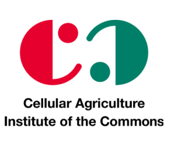

申込はどこからできますか？
チケット販売はPeatixに集約しています。ページ上部と下部のボタンから遷移できます。

第8回細胞農業会議 申し込む2026 Annual Conference
- 未来の食を現代のビジネスへ -
国内最大級！事業化に向けた細胞性食品(培養肉)のスタートアップ・最新研究・規制動向が丸わかり!
Overview
国内スタートアップ、アカデミア、行政、法規制、投資、代替タンパク質まで。事業化に直結する論点を、わかりやすく横断してつなぎます。
Highlights
Event Information
Speakers & Topics
Featured Profiles
Update
Agenda
スケジュールは変更になる可能性がございます
Access
東京都文京区。講演終了後はネットワーキングも予定しており、会場内で続けてご参加いただけます。
Information
チケット販売はPeatixに集約しています。ページ上部と下部のボタンから遷移できます。
可能です。案内上も入退場自由としています。
終了後にネットワーキングを予定しています。詳細は申込ページの案内をご確認ください。